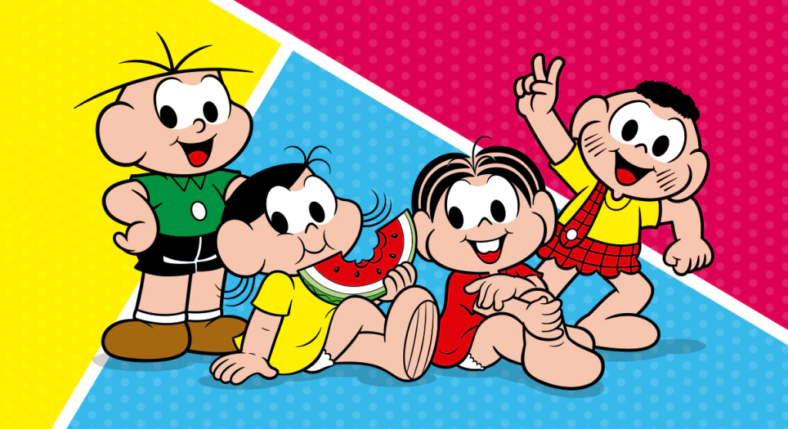
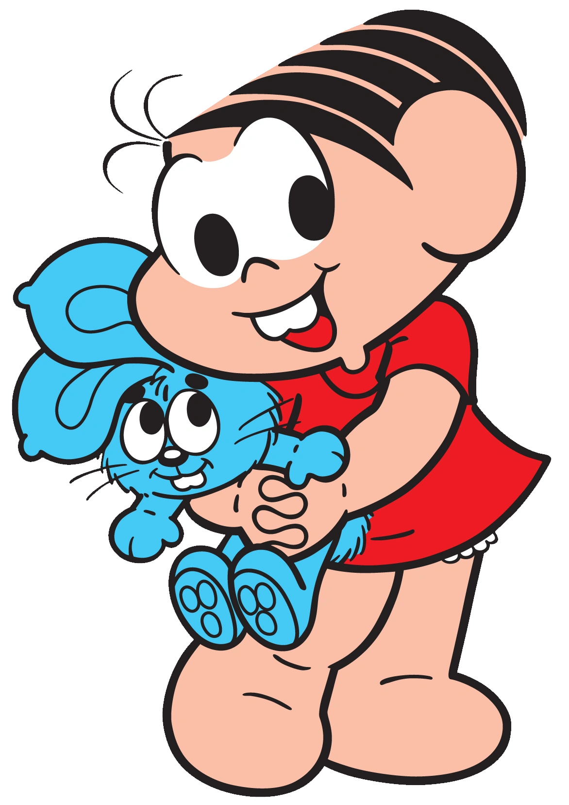
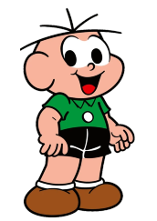
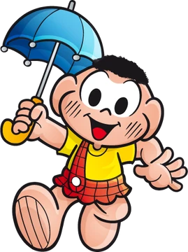
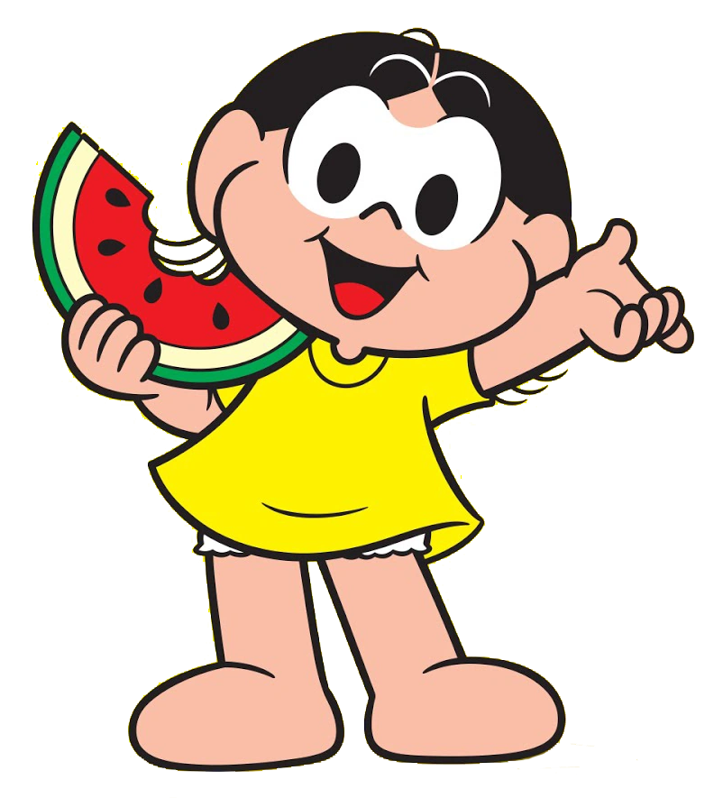

A Turma da Mônica acompanha as aventuras de Mônica, Cebolinha, Magali e Cascão, quatro amigos que vivem no bairro do Limoeiro. Entre brincadeiras, confusões e desafios, eles aprendem sobre amizade, respeito e a importância de estarem juntos. Cada história mistura humor e diversão, mostrando situações do dia a dia de forma leve e divertida.
A Turma da Mônica acompanha as aventuras de Mônica, Cebolinha, Magali e Cascão, quatro amigos que vivem no bairro do Limoeiro. Entre brincadeiras, confusões e desafios, eles aprendem sobre amizade, respeito e a importância de estarem juntos. Cada história mistura humor e diversão, mostrando situações do dia a dia de forma leve e divertida.

Conhecida como a “dona da rua”, Mônica é conhecida por ser muito forte e determinada. Usa um vestido vermelho e carrega seu inseparável coelho de pelúcia, Sansão.

Conhecido por ter apenas cinco fios de cabelo, trocar o "R" pelo "L" e elaborar planos para tentar pegar o coelho Sansão da Mônica.

O personagem é bem conhecido por estar sempre sujinho, já que morre de medo de água e faz o possível e o impossível para fugir do banho.

Conhecida por ser a melhor amiga de Mônica, por estar sempre com a barriga roncando e devorando tudo que vê pela frente, principalmente melancias.
O cãozinho Bidu e o Franjinha foram os primeiros personagens criados por Mauricio de Sousa, em 1959. O cão era originalmente cinza.
Mônica e Magali foram baseadas nas filhas de Mauricio de Sousa. Cebolinha e Cascão foram inspirados em amigos de infância do autor em Mogi das Cruzes.
O nome completo do Cebolinha é Cebolácio Júnior Menezes da Silva, e o do Cascão é Cássio Marques de Araújo.